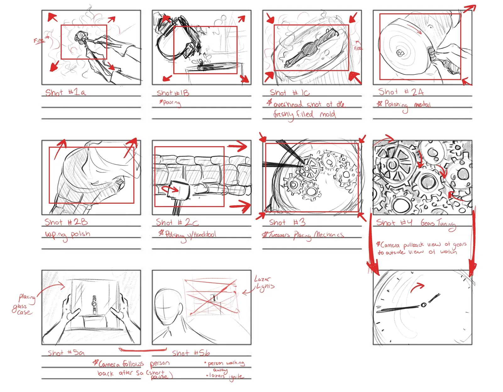
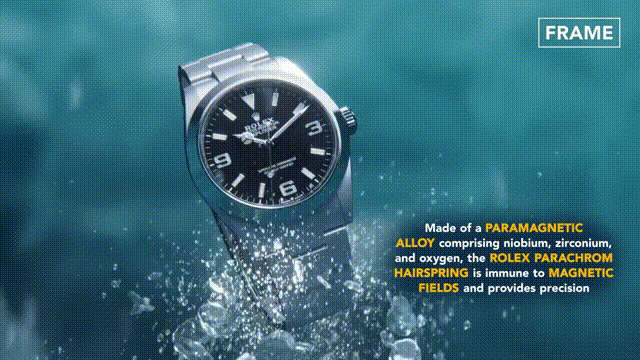
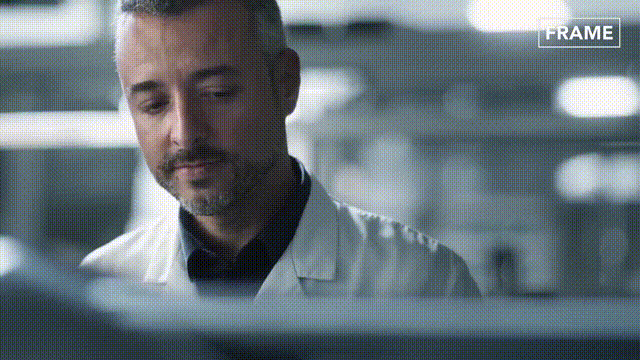
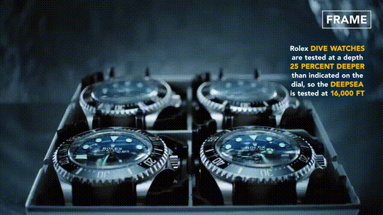

Bomin Kim (Fx)
Caleb Stovall (3D/2D)
Mojie Tang (Fx)
Sydney Relkin (Comp)
Yiqi Zheng (Fx)
SCAD X HARBOR - Week 1
Hello, this is my first week of the Scad x Harbor blog!
This week, we decided on the name of our team: Cronos. We also chose our product: a watch. The pre-production phase includes a storyboard, mood board, previs, and references for each shot.
After discussing with my teammates, we chose a watch as the product. The story follows the journey of a luxury watch as it undergoes an intricate transformation—from raw, unrefined elements to a masterfully crafted timepiece that emerges into the world as a symbol of elegance and precision.
Stroyboard:

Created by Kailey Gorsuch
Reference:



Previs:
reference
This is a very rough previs I created for the gold particles, using POPs in Houdini. Next week, I will add more details, such as dust and scattered gold on the surface.
Next week, I will also work on another shot featuring melting gold. I will use FLIP fluids to simulate the melting gold and Pyro to create the smoke in Houdini.